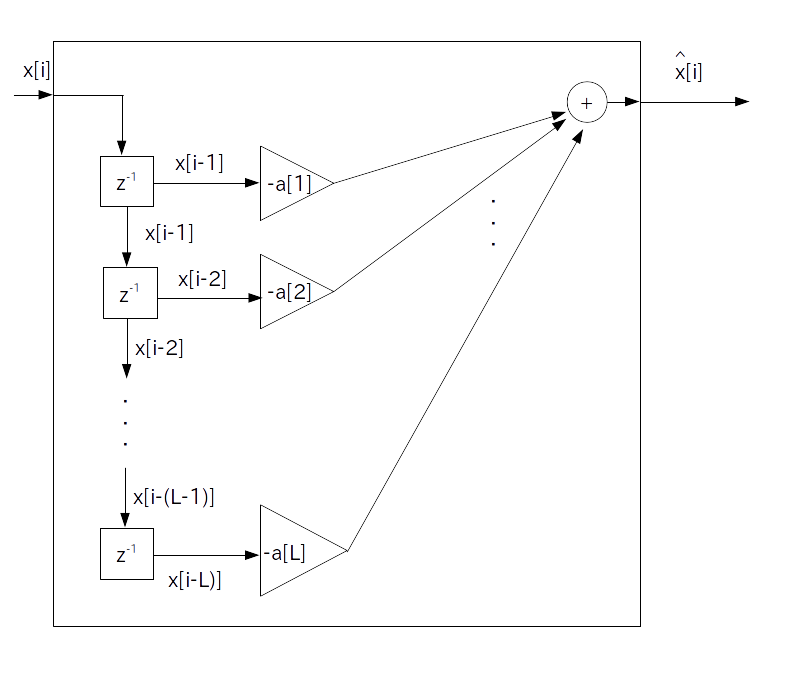

AR モデルについて説明する前にARモデルの基盤となっている「線形予測モデル」について説明します。
まずディジタル信号を $x[0]$ から $x[\textrm{N}-1]$ まで $\textrm{N}$ 個分だけ手に入れたという状況を考えます。
この時、時刻 $i$ における信号値 $x[i]$ に何かしらの数学的な構造を仮定することを「モデル化」とか「モデリング」と言います。
線形予測モデルでは「$x[i]$ の値は過去 $\textrm{L}$ 個の信号値と係数の畳み込みから予測できる」というモデルを仮定します。
$x[i]$ の予測値を $\hat{x}[i]$ とすると線形予測モデルは次のように定義されます。
$\textrm{L}$ を正の整数とした時
\begin{align*} \hat{x}[i] & = -\sum_{n=1}^{\textrm{L}} \{ a[n] \cdot x[i-n] \} \} \\ & = -a[1] \cdot x[i-1] -a[2] \cdot x[i-2] - \cdots -a[\textrm{L}] \cdot x[i-\textrm{L}] \end{align*}$\hat{x}[i]$ ・・・ $x[i]$ の予測値
$a[n]$ ・・・ LPC 係数(Linear Prediction Coefficient)、または線形予測係数と呼ぶ
$\sum$ の前にマイナスが付いている理由は次ページで説明しますので、今の所は特に気にしなくても結構です。
また $\textrm{L}$ と LPC 係数の値は本来は未知数なのですが、とりあえず今の所は既知であるとします。
ところでこの線形予測モデルは $\textrm{L}$ 次のFIR フィルタの形式になっています。
よって線形予測モデルは次のブロック図で表されます。
